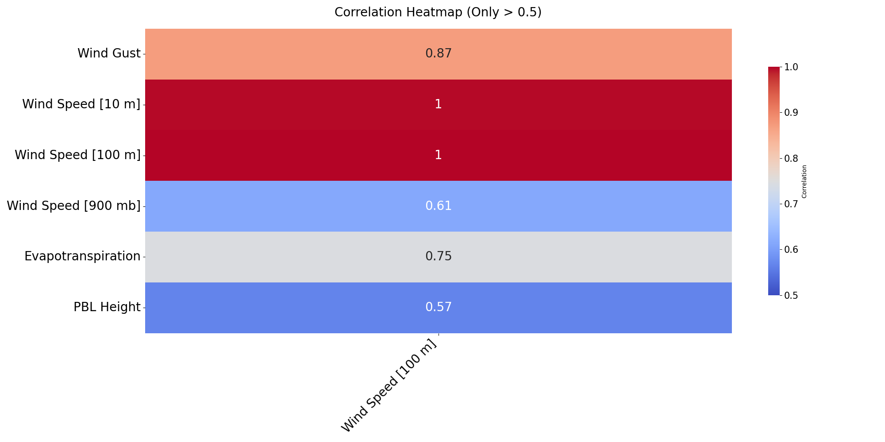
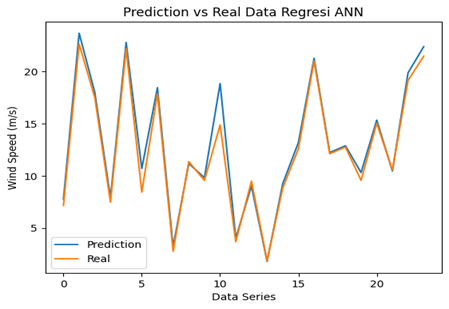
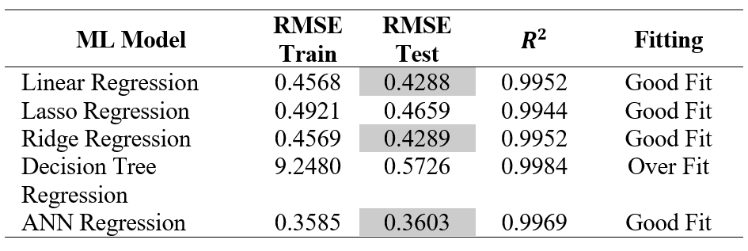

Proposed Research Workflow using ANN and Meteoblue Data
Enhancing Wind Energy Forecasting for Cost Efficiency in Hybrid Diesel and Solar Power Plants Using Artificial Neural Networks and Meteoblue Weather Data
This study integrates Artificial Neural Networks (ANN) with Meteoblue Weather data to improve the performance of hybrid diesel and solar power plants by accurately predicting wind energy output. Focusing on the Derawan Islands in Indonesia, where traditional energy grids are challenging to establish, the research enhances energy management by adding wind power to reduce the load on diesel plants. The ANN model, trained on historical weather data, achieved high predictive accuracy with an R² value of 0.9969 and RMSE values of 0.5772 for training and 0.5620 for testing. These results indicate a strong correlation between predicted and actual wind speeds, outperforming similar models used in other regions like Ethiopia and Chile. The findings highlight the ANN model's effectiveness in optimizing wind energy integration, making hybrid power systems more reliable and cost-effective for remote areas.
The correlation heatmap highlights several key variables with a strong correlation (greater than 0.5) with wind speed at 100 meters. Notably, wind speeds at 10 and 100 meters exhibit a perfect positive correlation with each other (correlation coefficient of 1), indicating a consistent relationship across these altitudes. Wind gusts also show a strong positive correlation (0.87) with wind speed at 100 meters, suggesting that higher gust speeds are closely associated with higher average wind speeds at this height. Evapotranspiration has a significant positive correlation (0.75) with wind speed at 100 meters, indicating that increased wind speeds may enhance the evapotranspiration rate. Additionally, the Planetary Boundary Layer (PBL) height shows a moderate positive correlation (0.57) with wind speed at 100 meters, suggesting that higher PBL heights are associated with higher wind speeds. These strong correlations underscore the key variables influencing wind speed at 100 meters, providing valuable insights for wind energy forecasting and related applications.

Filtered Correlation Heatmap of Meteorological Variables

Comparison of Actual vs Predicted Wind Speed Values
The graph compares predicted wind speed values with actual wind speed data using an Artificial Neural Network (ANN) regression model. The predicted values closely mirror the data, indicating that the ANN model effectively captures the overall trend of wind speed fluctuations. The model accurately predicts most peaks and troughs, with only minor deviations in some instances. The predicted values are often nearly identical to the actual values, showcasing the model’s precision. There are minor discrepancies, particularly around data points 4 to 6 and 8 to 12, where the model slightly underestimates or overestimates the wind speed. However, these discrepancies are relatively insignificant. The close alignment between the predicted and actual data lines suggests that the ANN model has been well-trained using the selected features from the heatmap, which demonstrated strong correlations with wind speed. This indicates that the model has effectively leveraged these features to make accurate predictions. Overall, the ANN regression model demonstrates high accuracy in predicting wind speed, closely matching the actual data, with the selected features playing a crucial role in its effective training and reliable predictions.
The provided table evaluates various machine learning (ML) models based on their Root Mean Square Error (RMSE) for both training and testing datasets, the coefficient of determination (R2), and their fitting characteristics. The ANN regression model is chosen among the models assessed for its balanced performance metrics and fitting attributes. Despite the ANN model’s RMSE values for training (0.3585) and testing (0.3603) being slightly higher than those of the Linear and Ridge Regression models, they remain within an acceptable range. This slight increase in RMSE values indicates a trade-off for a potentially more robust model capable of capturing complex patterns that simpler models might miss. Additionally, the ANN model achieves a high R^2 value of 0.9969, demonstrating excellent predictive power and explaining a substantial proportion of the variance in the wind speed data. Notably, the ANN model is labeled as having a "Good Fit," suggesting it avoids the pitfalls of overfitting or underfitting, unlike the Decision Tree model, which shows significant overfitting. This balance between predictive accuracy and model robustness makes the ANN regression model preferable for reliable and practical applications in wind speed prediction.

Comparison of Performance Metrics across Machine Learning Models